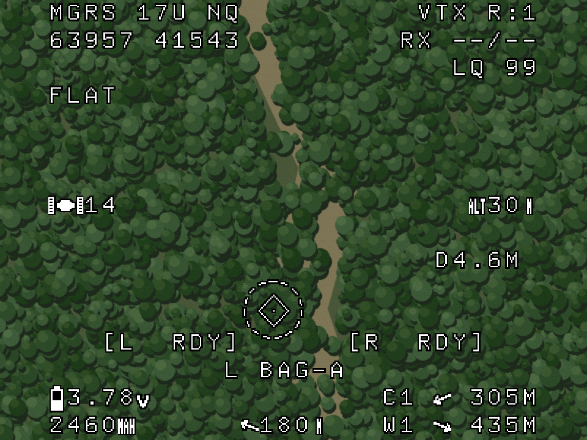

Authored report · Source / retained evidence in private GitHub repository ↗
Compact flight HUD — 2026-11-04
P01–P04 and the interactive downward preview use this proposed layout. Current-source C01–C03 retain the original profile and font. Proposed views use the thinner Fixed Medium 9x15 bitmap candidate. No FC/PCB setting is saved.

| Region | Order/content | Synthetic reference |
|---|---|---|
| Top left | Own MGRS zone/square, then easting/northing | MGRS 17U NQ / 63957 41543 |
| Top right | VTX channel, RX band/channel, LQ | VTX R:1 / RX --/-- / LQ 99 |
| Middle left | GPS satellite count | 14 |
| Middle right | GPS reference height | 30 m |
| Bottom left | Average cell voltage, consumed mAh | 3.78 V / 2460 mAh |
| Bottom centre | Home direction arrow followed by home distance | Heading-relative arrow + 180 m |
| Bottom right | Two nearest fresh TAK markers, closest first | C1 arrow + 305 m; W1 arrow + 435 m |
flight-layout.json defines the 30 × 16 grid positions. Middle-edge readouts share row 7; lower pairs use rows 14–15. Home arrow/distance are adjacent at bottom centre on row 15. Right-edge readouts align to column 29, preserving a margin. Exact positions and glyph codes are recorded in manifest.json.
Own MGRS uses the verified coordinate fixture, with full zone/square
and grouped five-digit easting/northing. See MGRS format notes. Receiver RF
band/channel still has no verified source, so --/-- is explicit. RC AUX channel numbers
must not be substituted for RF band/channel.
Navigation readouts
Home uses a synthetic 180 m displacement. Its arrow points from aircraft to home relative to aircraft azimuth. The two TAK rows use the same marker fixture as the SA pages. Compute horizontal range, exclude expired/invalid contacts, sort by distance then short marker ID, and retain two. C1 is about 305 m away, W1 about 435 m. Both rows identify the marker, show its relative-direction arrow and its range.
The list considers all fresh bounded contacts, including markers outside the radar
sector or current map range. It is not a waypoint list, affiliation filter or camera
projection. Heading changes rotate arrows without reordering ranges. Position changes
can change the order. Source expiry removes a row; no fresh contact leaves --. A point
at own position shows zero range and no direction arrow. No stale marker is held as current.
Directions use the existing 16 arrow glyphs: up is ahead, right is starboard, down is behind and left is port. This quantizes bearing to 22.5-degree steps; it is not a precision bearing readout. The prototype uses aircraft heading 045°. Actual navigation needs time-aligned positions, usable azimuth and independent source freshness.
Height and guidance
Middle-right altitude is whole metres of aircraft GPS altitude minus a captured
same-datum flat-ground reference. It is not barometric altitude, GPS absolute altitude
or terrain-following AGL. Missing usable GPS height/reference shows --; horizontal
position, home and marker data keep their separate validity. See flat-ground model.
RSSI, ESC temperature, throttle, total flight distance, GPS speed, pack voltage, current,
efficiency and latitude/longitude are omitted. FWD and GPS VEL notifications are
removed. At low speed the velocity marker quietly disappears, with no warning banner.
Current use assumes the vehicle is stationary at release. True CCIP is outside this
implementation scope. Both downward states display only FLAT as the surface advisory; TER is reserved for
actual height-grid use. CCIP ADVISORY and DOWN are removed. Package states remain on
row 12 and station/profile on row 13. Both diamonds are the same world-down unit-ray
projection, with native half-size 10, centre dot and black outline. Roll/pitch moves XY;
height never does. Valid GPS height adds the provisional circle and diameter readout;
without height the diamond stays at the same position and the circle disappears. There
is no DROP REF or missing-height banner. This reference does not predict a moving
package impact. See world-down and circle model.

The TAK SA pages retain their separate voltage-only FC policy and also show the two nearest-marker rows as TAK content. The God's-eye landscape is undimmed. Radar/MGRS background treatment remains separate. All layouts are independent of camera angle.
Field-source contracts, bounded marker handoff, freshness, actual FC/OSD layout integration and analog video/font acceptance remain future device work. No payload control or hardware setting is altered by these references.